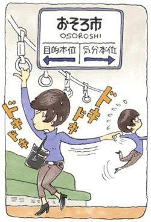

パニック障害1
パニック障害、書痙、乗り物恐怖を乗り越えて
（パニック発作、書痙、乗り物恐怖、他）
井上 恵子（仮名）36歳・主婦
生い立ち、そしてパニックとの出会い
私は、両親と妹の四人家族の中で育ちました。物心ついてからは、教育熱心な母親の期待に答えることが自分の使命だと思っていました。小学生の頃は、とにかく勉強しているふりをして、部屋にこもっていました。よく疲れたといっては、病院に行き精神的に不安定になると、指の皮が剥けて何ヶ月も治らない、アトピーのような症状もひどくなります。人前で発表するとか、順番に当てられるとかいう事が嫌で、異常に緊張している自分が情けないと思っていました。地域の学校に行ってなかったので、学校から帰ると一人で公園に行って、逆上がりの練習をしたりしている寂しい子供でした。
そんな私に転機が訪れたのは、中学受験の失敗です。絶対受かると思っていた付属の中学に行けなかったのです。「親に悪いことをした」と思う反面、「これで期待に答えなくていい、普通の人になろう」と思った私は、神経質だった小学生時代と打って変わって、勉強以外のことに目が向き、成績は落ちましたが、それなりに高校、短大と楽しい日々を送っていきました。社会人になってからも、ずっとこのまま楽しい日々が続いていくと・・・。これは30代前半にパニック発作を起すようになるまで、そう思っていました。
私が発作を起すようになったのは、主人が腎臓ガンにかかった頃、私が33歳の時です。結婚してから、主人に頼りきっていた私は、うろたえました。「もし、主人が死んでしまったらどうしよう、一人では生きていけない。」そんな思いばかりが駆け巡りました。「本人のほうが本当は辛い、私がしっかりしないと」と思い、明るく振舞っていましたが、眠れない夜が続きました。この頃、実家の父も入院することになり、母も体調を崩し、「私が頑張らないと」とますます思うようになりました。仕事に行っている時だけが忘れられ、楽だったように思います。
主人の抗がん剤治療も終え、退院後、今までずっと我慢していたのがあふれるように、出勤途中パニック発作を起すようになりました。突然、不安感が沸いてきて、手足がしびれだし、脈も速くなり背中が痛くなってきます。倒れませんが、背中の痛みが腰の辺りまで落ち、おさまるまで前のめりの姿勢でうずくまります。
始めは何がなんだかわからず、「何か、さっきからおかしい、ざわざわする。」と同僚にも訴えていました。発作の時に痛みもあったので、病院で検査もしましたが、異常はありませんでした。人からは「自律神経失調症」と言われました。仕事も手につかなくなって、とりあえず休みを取り、寝たほうがいいと思い横になっていました。
予期不安と震え恐怖

間もなく、「また、なるかも」と、予期不安にさいなまれるようになり、逃げられない場所、通勤電車、高速道路で渋滞した時など発作が起き、車に乗る事も、運転も出来なくなりました。日常で一番困ったのは、スーパーのレジに並ぶ事が、出来なくなったことです。「並んで待つ」ということが困難になった私は、銀行、病院など次々恐い場所が増えていきました。耐えられず、それから心療内科に行くようになりました。それが、死の恐怖と言われるということを知ったのは、何年も後のことです。
そのほかにも、美容院で顧客カードを書くとき、手が震えたことをふと気にしだし冠婚葬祭や、契約を交わすときの署名で書けなくなるのでは・・・。この事は、不安発作の話のようにあまり他の人に、話したくありませんでした。「みっともない、そんな自分はあってはならない、隠さなければ」と思いました。集談会（神経症の自助グループ：生活の発見会）の自己紹介で、この震え恐怖の事を皆の前で話したとき、グッと胸を、切られたような気持ちでした。コーヒーカップを持つ手が、震えた事を気にしだし、食事でも震えるのではないかと会食恐怖になりました。「この先、どこにも行けないし、楽しく食事する事もない、こんな惨めな自分は、生きていても仕方がない」と思いました。ウツのような症状になり、食欲もなく、家事も出来なくなり、思考回路が停止したような状態になり「死にたい」と口走り、家族を慌てさせました。
三年前、それまで不安感を持ちながらも、続けていた仕事をやめた頃から、とらわれがひどくなっていきました。家に引きこもりがちになり、朝から晩まで症状の事を考えるようになりました。そんな頃、歯科医院で強い発作を起し、やめていた薬をまた飲み始めました。飲みたくないのに、飲まないと外出できないという葛藤が始まり、薬神経症になりました。
インターネットで森田との出会い
家にいる時間が多いので、インターネットでパニック障害の事を検索していたら、岡本記念財団のHPにたどり着きました。そこには私と同じ乗り物恐怖の方が、だんだん元気になって会社に通い、薬もやめられた話が載っていました。「これだ」と思い、すぐに本屋に行きました。それから1週間ぐらいは「もう、これで治ることが出来る」という気持ちになり、明るくなった事を思い出します。このHPの掲示板に参加するようになって、管理人のMさんにお会いしたくて図書室まで出かけていきました。
地元の集談会に参加するようになって「家にいるより、何か仕事をしたほうがいい」と言われ、半年後、また簡単な仕事も始めるようになり、少しずつですが、行動するようになりました。
その頃の私は、どんなことでも不快を感じたら、「周りの人が悪い」と、人のせいにしていました。家族や周りの人が、どんなに親切にアドバイスしてくれても、「いや、わたしの場合は違う」と何でも否定していました。変なところで自信を持ちながらも、その反面、森田で治っていく人を見て焦っていました。「これではいけない少しでも、進歩しなければ」と思い、まず愚痴を言うことをやめようと考えました。もともと、家族には愚痴ばかりを言っていたので、うんざりされているのを感じていました。誰かに訴えて、同情してほしいと思っていたのです。染み付いた癖なので、始めは我慢する事からでした。つい、のどまで出掛かってやめると言う感じでした。実践しているうちに、他の事柄について、少しですが、考えられるようになりました。それから、激しい落ち込みが少なくなってきました。愚痴は言えば言うほど、自分が取り込まれ、はまっていくということがわかりました。
薬は実際、月に一錠ぐらいしか飲んでいなかったので、ほとんど気持ちの依存でした。私は、薬を最後の逃げ道として、何かあれば飲もうと、ずっと思い続けていました。そんな時、集談会で今は、一応やめていることをみんなの前で言ってしまいました。こっそり、いつの間にかやめられたらと思っていたのですが、みんなの前で言ってしまったので「本当にやめなければいけなくなった、どうしよう」とあせりました。もうカラ元気で乗り切る自信もなくなってしましました。「もう我慢するしかない。辛くなったら、集談会の先輩に相談しよう。」と考えました。クリニックの先生にも「決めたなら、信念を貫け」と言われました。
乗り物恐怖を乗り越えて
その後、電車に乗る機会がありました。今までやっていた、電車に乗る練習のようなこととは違い、その日はどうしても今日そこに行かなければならない、何が何でも行くという覚悟がありました。嫌だったら途中で降りればいい、帰ればいいという気持ちは、そこにはありませんでした。必死で急行電車に乗りました。でも、恐ろしい。もう、恐怖そのものです。「我慢、我慢」と唱えるような気持ちでした。
私の発作は、わがまま発作で、「もうダメだ、嫌だ。」と起こしてしまえば、それで満足するような感がありました。ですから、そこまで高めないようにしようと思いました。この日を機に、電車に対する恐怖は、薄れていきました。恐怖突入が、少しわかったように思いました。これまでの私は森田の勉強に対しても、懇談会に参加するにしても、冷めた目で見ていたと思います。人に厳しく、自分に甘いので放っておくと、すぐに気分本位になります。だから今後は、今は何をすべきなのか、事実本位で考えられるようにしていきたいです。
神経症になって、趣味程度ですが続けていたスポーツを、ほとんどやめていました。しかし、一年前から始めた自転車は、私を外に連れ出してくれました。少しでも外の空気に触れることができ、季節の移り変わりを感じるようになりました。もともとあまり食べなかった私が、食欲があって困っています。抑うつ状態で、1杯のご飯さえ食べるのがやっとだった頃を思えば、今の食欲があって、食べられることは、ありがたいと思います。弱い心を支えるには、強い体が必要だと本当に思います。
長い間「自分にはできない」と逃げてきました。疑いながら、恐れながらも手を出していくことの大切さを教えていただきました。たとえ失敗してもこれが自分の本当の姿なのだと思うようになり、自分を責めることが少なくなりました。あと、森田療法を学んだ仲間の人とのメールや掲示板で日々頑張っている姿を見せてもらったり、自分も書き込んだりして皆さんとかかわっていくうちに、元気をもらうことが、一番良いように思います。